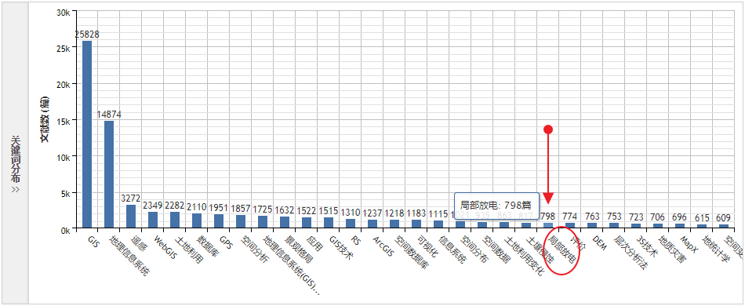

意外在知网发现了另一个“GIS”。
在知网以“GIS”为主题搜索文献，做计量可视化分析的时候发现有一个关键词显得格格不入，而我则是第一次看到这个词，那就是“局部放电”。更惊讶的是，数量还不少，共798篇，排名第22。刚开始，我以为又发现了GIS（地理信息科学）不为我知的秘密。

然后定位到关键词 —— 局部放电，下面是“关键词知网节”给出的解释。
局部放电（partial discharge；partial discharge (pd)；partial discharges）
电气设备绝缘结构中局部区域内的放电现象。这种放电只是绝缘在局部范围内被击穿,导体间绝缘并未发生贯穿性击穿,但若局部放电长期存在,则在一定条件下可造成设备绝缘电气强度的破坏。——《中国电力百科全书·电工技术基础卷》
看来看去，好像跟GIS（地理信息科学）没有任何关系，也没发现任何有关“GIS”的字眼，倒是跟它的“外貌”一样，与“电”有关。先是点开了几篇文献，在摘要中看到了“GIS”：气体绝缘组合开关设备（GIS），但是没有看到它的英文全称，后来再去搜索“气体绝缘组合开关设备”才发现它的真面目 —— Gas Insulated Switchgear。
的确，你的缩写也是“GIS”。
下面，隆重地向大家介绍一下这位新朋友：
气体绝缘组合电器设备，GIS，即Gas Insulated Switchgear。
指全部或者部分采用气体而不采用处于大气压下的空气作为绝缘介质的金属封闭开关设备。它由断路器、隔离开关、接地开关、互感器、避雷器、母线、连接件和出线终端等组成，这些设备或部件全部封闭在金属接地的外壳中，在其内部充有绝缘性能和灭弧性能优异的SF6（六氟化硫）气体作为绝缘和灭弧介质，故也称SF6全封闭组合电器。GIS设备自20世纪60年代实用化以来，已广泛运行于世界各地。GIS不仅在高压、超高压领域被广泛应用，而且在特高压领域也被使用。与常规敞开式变电站相比，GIS的优点在于结构紧凑、占地面积小、可靠性高、配置灵活、安装方便、安全性强、环境适应能力强，维护工作量很小，其主要部件的维修间隔不小于20年。目前，GIS国外生产厂家主要有ABB、东芝、三菱、日立、西门子、阿尔斯通等，国内生产厂家有西开、沈高、平高等。—— 《百度百科》